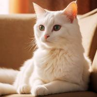

Riot Gallery Viewer - HTML on Various HTML Tags
Gallery in a Table Tag

|
 |

|

Lake with mountains in the background
|
Gallery in a DIV Tag with Child Figure Tags

Gallery in a DL Tag (definition list)
- King Tut
- Tutankhamun or Tutankhamen, was an ancient Egyptian pharaoh who ruled c. 1332 – 1323 BC during the late Eighteenth Dynasty of ancient Egypt. Born Tutankhaten, he was likely a son of Akhenaten, thought to be buried in KV55.
- Waterfall
- A waterfall is any point in a river or stream where water flows over a vertical drop or a series of steep drops. Waterfalls also occur where meltwater drops over the edge of a tabular iceberg or ice shelf.
- Dog
- The dog is a domesticated descendant of the gray wolf. Also called the domestic dog, it was selectively bred from an extinct population of wolves during the Late Pleistocene by hunter-gatherers. The dog was the first species to be domesticated by humans, over 14,000 years ago and before the development of agriculture.
- Lake
- A lake is a large body of standing, inland water surrounded by land, often fed by rivers, springs, or precipitation.
Gallery in a P Tag (paragraph)
The Blue Jay is a passerine bird in the family Corvidae, native to eastern North America. It lives in most of the eastern and central United States; some eastern populations may be migratory. Resident populations are also in Newfoundland, Canada; breeding populations are found across southern Canada. The Cat is a small domesticated carnivorous mammal. It is the only domesticated species of the family Felidae. Advances in archaeology and genetics have shown that the domestication of the cat occurred in the Near East around 7500 BC. The Dog is a domesticated descendant of the gray wolf. Also called the domestic dog, it was selectively bred from an extinct population of wolves during the Late Pleistocene by hunter-gatherers. The dog was the first species to be domesticated by humans, over 14,000 years ago and before the development of agriculture. The Squirrel family includes tree squirrels, ground squirrels (including chipmunks and prairie dogs, among others), and flying squirrels. Squirrels are indigenous to the Americas, Eurasia, and Africa, and were introduced by humans to Australia. The earliest known fossilized squirrels date from the Eocene epoch, and among other living rodent families, the squirrels are most closely related to the mountain beaver and dormice.
{kind=link}